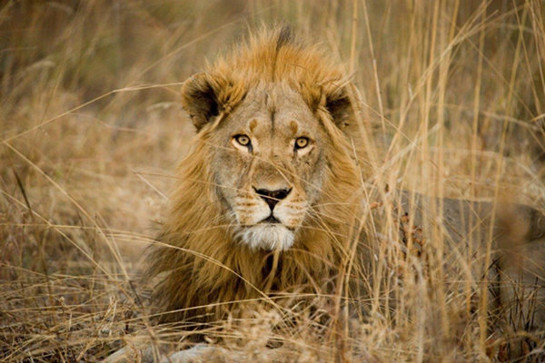

El Majestuoso León
Conoce al verdadero Rey de la sabana.
ExploraEl rugido de un león se puede escuchar hasta a 8 km de distancia, lo usan para defender su territorio.
Los leones son animales crepusculares y nocturnos, cazando principalmente durante la noche.
La melena de un león macho indica su edad y salud. Cuanto más oscura y densa, más fuerte es el león.
Los leones han sido símbolos de poder y realeza a lo largo de la historia de la humanidad. Desde las cuevas prehistóricas de Lascaux hasta los escudos de armas medievales y las monedas antiguas, su imagen ha perdurado como un emblema de fuerza, valentía y majestad.
En el antiguo Egipto, la diosa de la guerra, Sejmet, era representada con la cabeza de una leona, y las esfinges, a menudo con cuerpo de león, protegían las tumbas de los faraones. En la mitología griega, el león de Nemea era un monstruo invencible, y en muchas culturas africanas y asiáticas, los leones son vistos como animales sagrados o protectores.

El león (Panthera leo) se encuentra principalmente en las sabanas y pastizales de África subsahariana y, en menor medida, en el Parque Nacional del Bosque de Gir, en la India. Viven en manadas, una estructura social única entre los felinos, lo que les permite cazar presas grandes y protegerse de otros depredadores.
A pesar de su estatus como Rey de la selva, la población de leones ha disminuido drásticamente en las últimas décadas. La pérdida de hábitat, el conflicto con humanos y la caza ilegal son las principales amenazas. Diversas organizaciones trabajan para proteger a estos magníficos animales.